The original, as published: Tony R. Kuphaldt, Lessons In Industrial Instrumentation, Calibration: zero, span and calibration errors. CC BY 4.0, https://creativecommons.org/licenses/by/4.0/. Imported as published, from https://www.ibiblio.org/kuphaldt/socratic/sinst/book/liii.pdf https://www.ibiblio.org/kuphaldt/socratic/sinst/book/liii.pdf
To calibrate an instrument means to check and adjust (if necessary) its response so the output accurately corresponds to its input throughout a specified range. In order to do this, one must expose the instrument to an actual input stimulus of precisely known quantity. For a pressure gauge, indicator, or transmitter, this would mean subjecting the pressure instrument to known fluid pressures and comparing the instrument response against those known pressure quantities. One cannot perform a true calibration without comparing an instrument’s response to known, physical stimuli. To range an instrument means to set the lower and upper range values so it responds with the desired sensitivity to changes in input. For example, a pressure transmitter set to a range of 0 to
200 PSI (0 PSI = 4 mA output ; 200 PSI = 20 mA output) could be re-ranged to respond on a scale of 0 to 150 PSI (0 PSI = 4 mA ; 150 PSI = 20 mA). In analog instruments, re-ranging could (usually) only be accomplished by re-calibration, since the same adjustments were used to achieve both purposes. In digital instruments, calibration and ranging are typically separate adjustments (i.e. it is possible to re-range a digital transmitter without having to perform a complete recalibration), so it is important to understand the difference.
The purpose of calibration is to ensure the input and output of an instrument reliably correspond to one another throughout the entire range of operation. We may express this expectation in the form of a graph, showing how the input and output of an instrument should relate. For the vast majority of industrial instruments this graph will be linear:
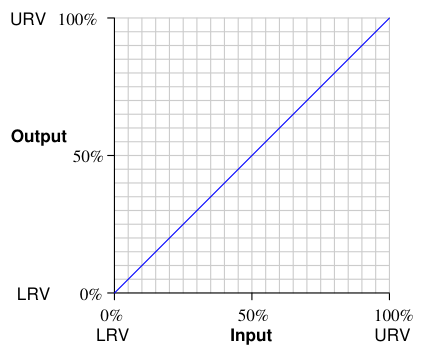
This graph shows how any given percentage of input should correspond to the same percentage of output, all the way from 0% to 100%.
Things become more complicated when the input and output axes are represented by units of measurement other than “percent.” Take for instance a pressure transmitter, a device designed to sense a fluid pressure and output an electronic signal corresponding to that pressure. Here is a graph for a pressure transmitter with an input range of 0 to 100 pounds per square inch (PSI) and an electronic output signal range of 4 to 20 milliamps (mA) electric current:
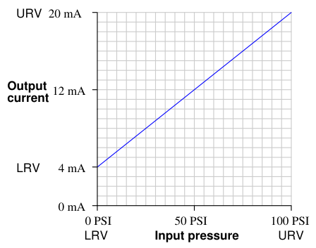
Although the graph is still linear, zero pressure does not equate to zero current. This is called a live zero, because the 0% point of measurement (0 PSI fluid pressure) corresponds to a non-zero (“live”) electronic signal. 0 PSI pressure may be the LRV (Lower Range Value) of the transmitter’s input, but the LRV of the transmitter’s output is 4 mA, not 0 mA. Any linear, mathematical function may be expressed in “slope-intercept” equation form:
y = mx + b
Where, y = Vertical position on graph x = Horizontal position on graph m = Slope of line b = Point of intersection between the line and the vertical (y) axis
This instrument’s calibration is no different. If we let x represent the input pressure in units of PSI and y represent the output current in units of milliamps, we may write an equation for this instrument as follows:
y = 0.16x + 4
On the actual instrument (the pressure transmitter), there are two adjustments which let us match the instrument’s behavior to the ideal equation. One adjustment is called the zero while the other is called the span. These two adjustments correspond exactly to the b and m terms of the linear function, respectively: the “zero” adjustment shifts the instrument’s function vertically on the graph (b), while the “span” adjustment changes the slope of the function on the graph (m). By adjusting both zero and span, we may set the instrument for any range of measurement within the manufacturer’s limits. The relation of the slope-intercept line equation to an instrument’s zero and span adjustments reveals something about how those adjustments are actually achieved in any instrument. A “zero” adjustment is always achieved by adding or subtracting some quantity, just like the y-intercept term b adds or subtracts to the product mx. A “span” adjustment is always achieved by multiplying or dividing some quantity, just like the slope m forms a product with our input variable x.
Zero adjustments typically take one or more of the following forms in an instrument:
Span adjustments typically take one of these forms:
It should be noted that for most analog instruments, zero and span adjustments are interactive. That is, adjusting one has an effect on the other. Specifically, changes made to the span adjustment almost always alter the instrument’s zero point1. An instrument with interactive zero and span adjustments requires much more effort to accurately calibrate, as one must switch back and forth between the lowerand upper-range points repeatedly to adjust for accuracy.
The efficient identification and correction of instrument calibration errors is an important function for instrument technicians. For some technicians – particularly those working in industries where calibration accuracy is mandated by law – the task of routine calibration consumes most of their working time. For other technicians calibration may be an occasional task, but nevertheless these technicians must be able to quickly diagnose calibration errors when they cause problems in instrumented systems. This section describes common instrument calibration errors and the procedures by which those errors may be detected and corrected.
1However, it is actually quite rare to find an instrument where a change to the zero adjustment affects the instrument’s span.
Recall that the slope-intercept form of a linear equation describes the response of any linear instrument:
y = mx + b
Where, y = Output m = Span adjustment x = Input b = Zero adjustment
A zero shift calibration error shifts the function vertically on the graph, which is equivalent to altering the value of b in the slope-intercept equation. This error affects all calibration points equally, creating the same percentage of error across the entire range. Using the same example of a pressure transmitter with 0 to 100 PSI input range and 4 to 20 mA output range:
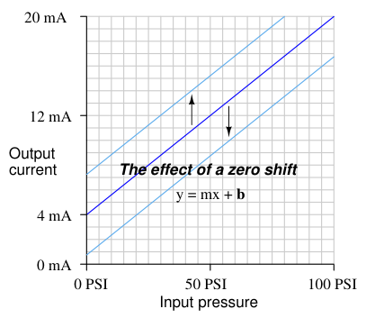
If a transmitter suffers from a zero calibration error, that error may be corrected by carefully moving the “zero” adjustment until the response is ideal, essentially altering the value of b in the linear equation.
A span shift calibration error shifts the slope of the function, which is equivalent to altering the value of m in the slope-intercept equation. This error’s effect is unequal at different points throughout the range:
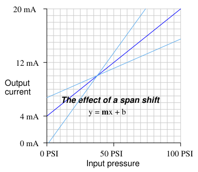
If a transmitter suffers from a span calibration error, that error may be corrected by carefully moving the “span” adjustment until the response is ideal, essentially altering the value of m in the linear equation.
A linearity calibration error causes the instrument’s response function to no longer be a straight line. This type of error does not directly relate to a shift in either zero (b) or span (m) because the slope-intercept equation only describes straight lines:
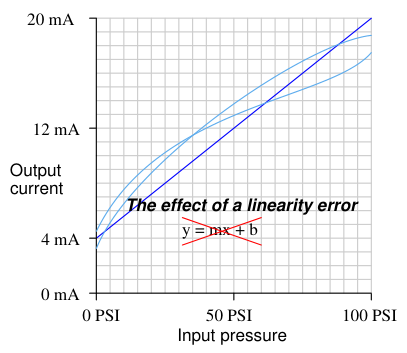
Some instruments provide means to adjust the linearity of their response, in which case this adjustment needs to be carefully altered. The behavior of a linearity adjustment is unique to each model of instrument, and so you must consult the manufacturer’s documentation for details on how and why the linearity adjustment works. If an instrument does not provide a linearity adjustment, the best you can do for this type of problem is “split the error” between high and low extremes, so the maximum absolute error at any point in the range is minimized.
A hysteresis calibration error occurs when the instrument responds differently to an increasing input compared to a decreasing input. The only way to detect this type of error is to do an up-down calibration test, checking for instrument response at the same calibration points going down as going up:
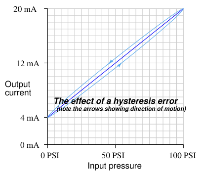
Hysteresis errors are almost always caused by mechanical friction on some moving element (and/or a loose coupling between mechanical elements) such as bourdon tubes, bellows, diaphragms, pivots, levers, or gear sets. Friction always acts in a direction opposite to that of relative motion, which is why the output of an instrument with hysteresis problems always lags behind the changing input, causing the instrument to register falsely low on a rising stimulus and falsely high on a falling stimulus. Flexible metal strips called flexures – which are designed to serve as frictionless pivot points in mechanical instruments – may also cause hysteresis errors if cracked or bent. Thus, hysteresis errors cannot be remedied by simply making calibration adjustments to the instrument – one must usually replace defective components or correct coupling problems within the instrument mechanism.
In practice, most calibration errors are some combination of zero, span, linearity, and hysteresis problems. An important point to remember is that with rare exceptions, zero errors always accompany other types of errors. In other words, it is extremely rare to find an instrument with a span, linearity, or hysteresis error that does not also exhibit a zero error. For this reason, technicians often perform a single-point calibration test of an instrument as a qualitative indication of its calibration health. If the instrument performs within specification at that one point, its calibration over the entire range is probably good. Conversely, if the instrument fails to meet specification at that one point, it definitely needs to be recalibrated.
A very common single-point test for instrument technicians to perform on differential pressure (“DP”) instruments is to close both block valves on the three-valve manifold assembly and then open the equalizing valve, to produce a known condition of 0 PSI differential pressure:
Normal operation
"Block and Equalize" test
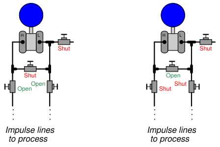
Most DP instrument ranges encompass 0 PSI, making this a very simple single-point check. If the technician “blocks and equalizes” a DP instrument and it properly reads zero, its calibration is probably good across the entire range. If the DP instrument fails to read zero during this test, it definitely needs to be recalibrated.
An important principle in calibration practice is to document every instrument’s calibration as it was found and as it was left after adjustments were made. The purpose for documenting both conditions is to make data available for calculating instrument drift over time. If only one of these conditions is documented during each calibration event, it will be difficult to determine how well an instrument is holding its calibration over long periods of time. Excessive drift is often an indicator of impending failure, which is vital for any program of predictive maintenance or quality control. Typically, the format for documenting both As-Found and As-Left data is a simple table showing the points of calibration, the ideal instrument responses, the actual instrument responses, and the calculated error at each point. The following table is an example for a pressure transmitter with a range of 0 to 200 PSI over a five-point scale:
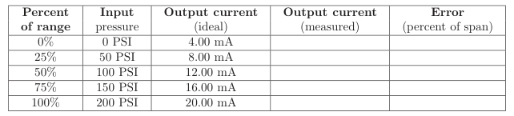
The following photograph shows a single-point “As-Found” calibration report on a temperature indicating controller, showing the temperature of the calibration standard (−78.112 degrees Celsius), the display of the instrument under test (IUT, −79 degrees Celsius), and the error between the two (−0.888 degrees Celsius):
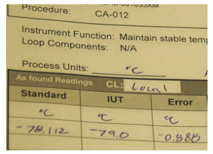
Note that the mathematical sign of the error is important. An instrument that registers −79 degrees when it should register −78.112 degrees exhibits a negative error, since its response is lower (i.e. more negative) than it should be. Expressed mathematically: Error = IUT −Standard. When the error must be expressed in percentage of span, the formula becomes:
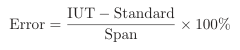
It is not uncommon for calibration tables to show multiple calibration points going up as well as going down, for the purpose of documenting hysteresis and deadband errors. Note the following example, showing a transmitter with a maximum hysteresis of 0.313 % (the offending data points are shown in bold-faced type):
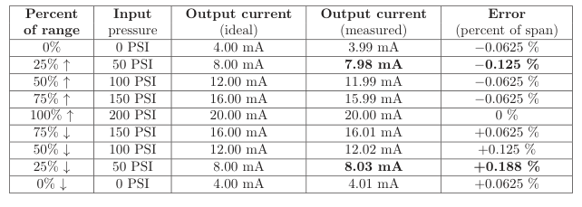
Note again how error is expressed as either a positive or a negative quantity depending on whether the instrument’s measured response is above or below what it should be under each condition. The values of error appearing in this calibration table, expressed in percent of span, are all calculated by the following formula:
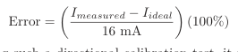
In the course of performing such a directional calibration test, it is important not to overshoot any of the test points. If you do happen to overshoot a test point in setting up one of the input conditions for the instrument, simply “back up” the test stimulus and re-approach the test point from the same direction as before. Unless each test point’s value is approached from the proper direction, the data cannot be used to determine hysteresis/deadband error.
Maintaining the calibration of instruments at a large industrial facility is a daunting task. Aside from the actual labor of checking and adjusting calibration, records must be kept not only of instrument performance but also of test conditions and criteria (e.g. calibration tolerance, time interval between calibrations, number of points to check, specific procedures, etc.). Any practical method to minimize human error in this process is welcome. For this reason, automated and semi-automated calibration tools have been developed to help manage the data associated with calibration, and to make the instrument technician’s job more manageable. An example of a fully automated calibration system is a process chemical analyzer where a set of solenoid valves direct chemical samples of known composition to the analyzer at programmed time intervals, a computer inside the analyzer recording the analyzer’s error (compared to the known standard) and auto-adjusting the analyzer in order to correct for whatever errors are detected. In the following illustration we see a schematic of a gas analyzer with two compressed-gas cylinders holding gases of 0% and 100% concentration of the compound(s) of interest, called “zero gas” and “span gas”, connected through solenoid valves so that the chemical analyzer may be automatically tested against these standards:
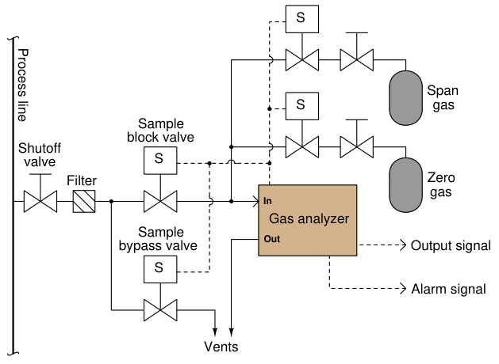
The only time a human technician need attend to the analyzer is when parameters not monitored by the auto-calibration system must be checked, and when the auto-calibration system detects an error too large to self-correct (thus indicating a fault). An example of a semi-automated calibration system is an instrument such as Fluke’s series of Documenting Process Calibrators (DPC). These devices function as standards for electrical measurements such as voltage, current, and resistance, with built-in database capability for storing calibration records and test conditions:
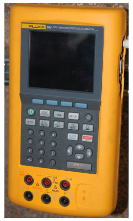
A technician using a documenting calibrator such as this is able to log As-Found and As-Left data in the device’s memory and download the calibration results to a computer database at some later time. The calibrator may also be programmed with test conditions for each specific instrument on the technician’s work schedule, eliminating the need for that technician to look up each instrument’s test conditions in a book, and thereby reducing the potential for human error.
An example of database software used to schedule routine instrument calibrations and archive the results is Fluke’s DPCTrack2, a point-and-click user interface serving as a front-end to an SQL database where the instrument data is maintained in digital format on the computer’s hard drive:
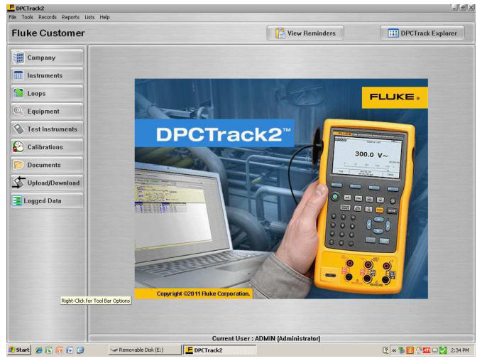
Calibration management software allows managers to define calibration schedules, tolerances, and even technician work assignments, the software allowing for downloading of this setup information into a hand-held calibrator unit, as well as uploading and archival of calibration results following the procedure.
In some industries, this degree of rigor in calibration record-keeping is merely helpful; in other industries it is vital for business. Examples of the latter include pharmaceutical manufacturing, where regulatory agencies (such as the Food and Drug Administration in the United States) enforces rigorous standards for manufacturing quality including requirements for frequent testing and data archival of process instrument accuracy. Record-keeping in such industries is not limited to AsFound and As-Left calibration results, either; each and every action taken on that instrument by a human being must be recorded and archived so that a complete audit of causes may be conducted should there ever be an incident of product mis-manufacture.